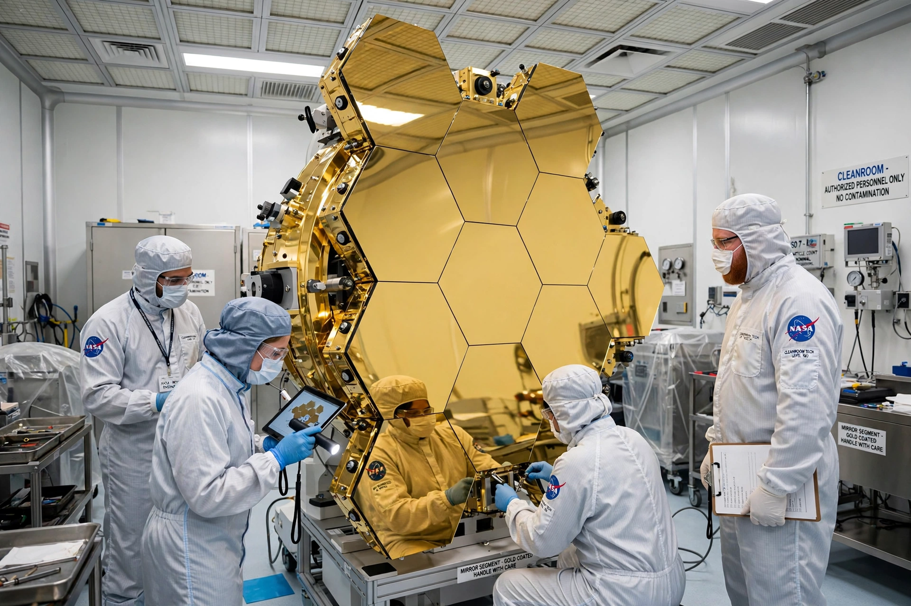

Northrop Grumman
From Wikipedia, the free encyclopedia
| Northrop Grumman | |
|---|---|
| Founded | 1994 (Northrop + Grumman merger) |
| Headquarters | Falls Church, Virginia |
| Space roles | James Webb Space Telescope, Cygnus, Lunar Gateway HALO, SRBs for SLS |

Webb's mirrors at Northrop.Northrop Grumman Corporation is an American aerospace and defence company formed by the 1994 merger of Northrop with Grumman — the builder of Apollo's Lunar Module — and now one of the Pentagon's largest contractors. In spaceflight it is the prime contractor for the James Webb Space Telescope, builder of the Cygnus station freighter and the Lunar Gateway's HALO habitat, and maker of the giant solid rocket boosters for NASA's Space Launch System (inherited through its 2018 acquisition of Orbital ATK).
The company's heritage lines reach back through both world wars of aviation; its modern space portfolio also includes missile-warning satellites, the B-21 bomber on the defence side, and the Antares rocket flown with Ukrainian and Russian-derived stages until 2022 forced a redesign with Firefly Aerospace.
Continuity
Northrop Grumman's Bethpage-to-Dulles lineage makes it the institutional descendant of the LM team chronicled under Grumman: the same corporate family that put landers on the Moon in 1969 is building the habitat meant to orbit it in the Artemis era.
See also
Grumman · Cygnus (spacecraft) · James Webb Space Telescope · Space Launch System